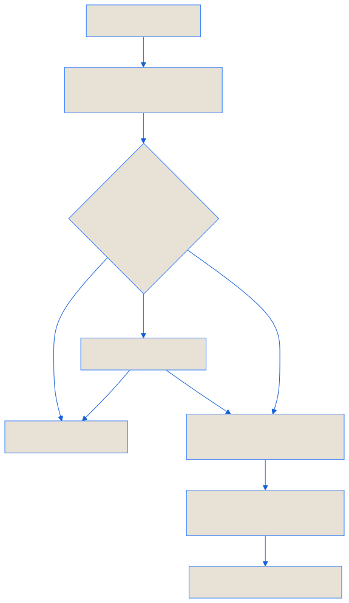

Use this page with an installed app. The exact controls depend on the app and the release. Check the release status for what is available.
On this page
One change, four steps
request
→ review and approval
→ change
→ check and record
The order matters. An app can suggest work without getting permission to do it. A change can also fail its checks. StatePort shows both outcomes.
Read the proposal
Before you approve, check the outcome it asks for, the current base revision, the files or operations in scope, the side effects, who is acting, and the budget. A proposal is an exact thing to review. If its base or content changes, the old approval should no longer apply.
For a template import, check the detected template type, the exact commit, the working-tree status and the inspection findings before you choose Create isolated copy. For a run, check the list of operations and the validation plan. A receipt is created after the operation. It does not turn an unreviewed action into a reviewed one.
Who applies the change. For actions that follow a fixed script, such as the StudyState sample, the system applies what you approve. Output from coding agents is recorded as a run result. StatePort does not turn it into saved app state. The workbench file editor is a separate path, limited by permissions: it checks a change but does not need a proposal.
Permissions
You can allow routine, reversible work without approving every small step. Deleting data, spending money, publishing content or contacting another service should stop and ask you again. An app cannot give itself more access.
Cancel and recover
Use Cancel on the selected workload to interrupt it. Read the confirmation. Output may be incomplete, and StatePort does not resume a cancelled operation. A stopped workspace can usually be started again. A cancelled operation needs a new request.
When the execution host (the run environment) offers Recover application workspace, recovery reuses the workspace’s saved profile and reattaches the data that was kept. It refuses to overwrite data that is already there. If provider work must stop, Disconnect StatePort stops the running assistant and cancels queued requests. The transcript stays.
Supervising without watching every step
Routine work can continue while you watch. You should be able to pause, redirect or stop the app, and StatePort asks for approval when the consequences call for it. Today the StudyState sample can pause and redirect an activity, you can cancel a workload, and you can pause or revoke a standing grant.
What a change record tells you
- What was requested?
- Who approved it?
- What did the app do?
- Did the checks pass?
- What still needs attention?
A clear record does not make a bad decision good. It makes the decision easier to inspect and correct.
When work is blocked
If StatePort cannot continue safely, it should stop and say why. Read-only or unavailable modes should suggest a next step.
